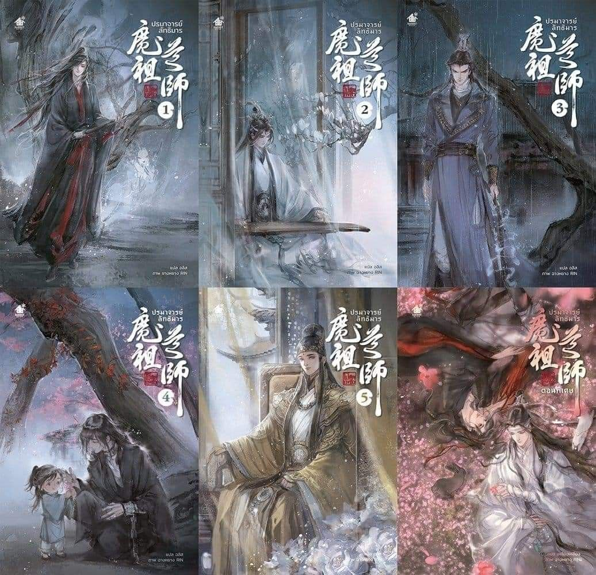
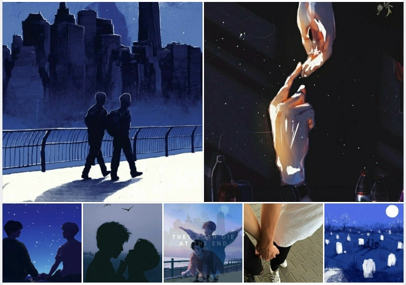
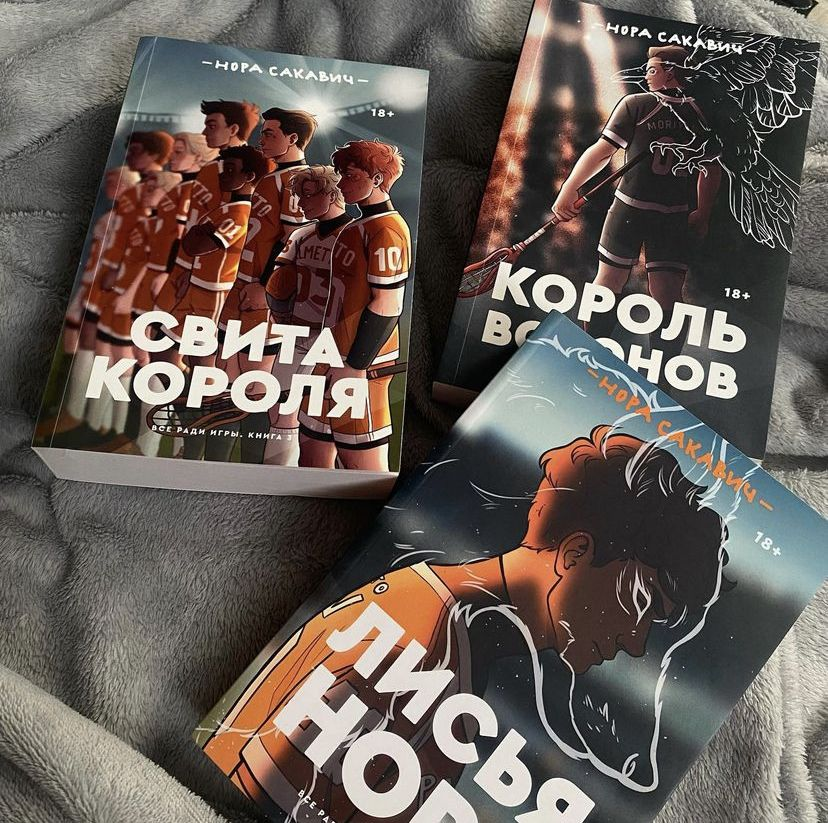
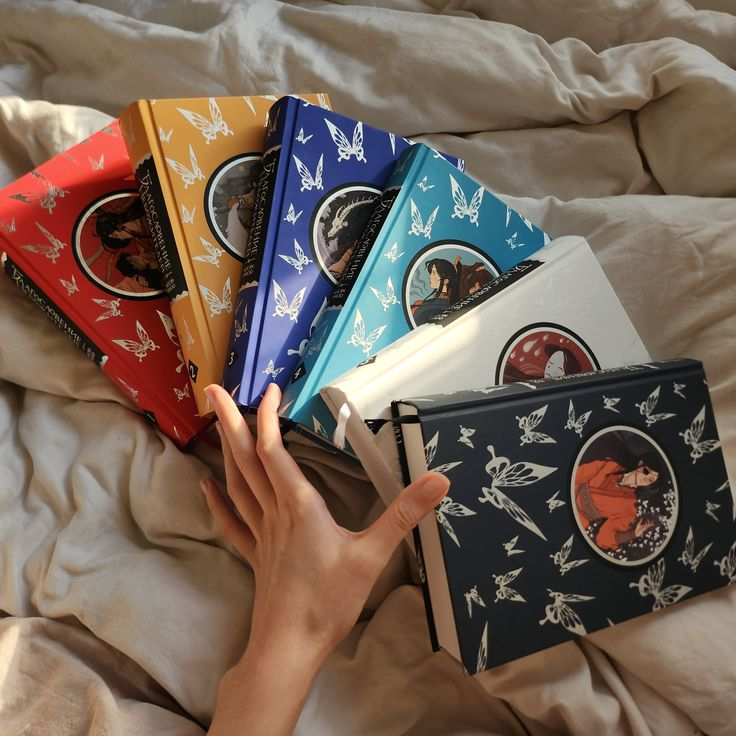
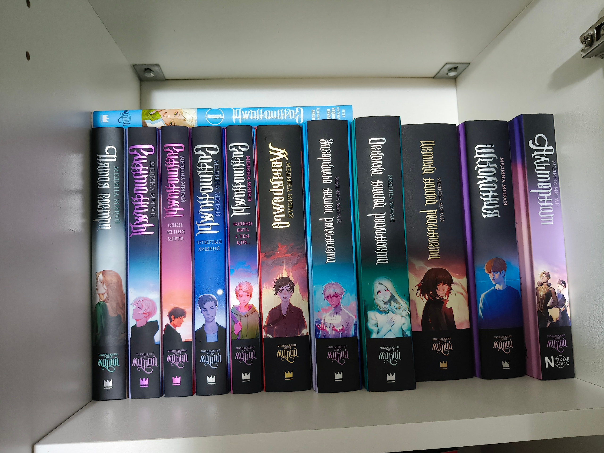
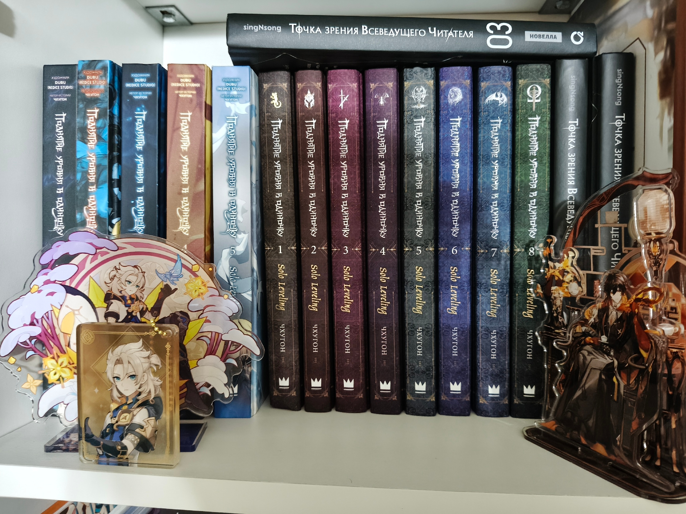
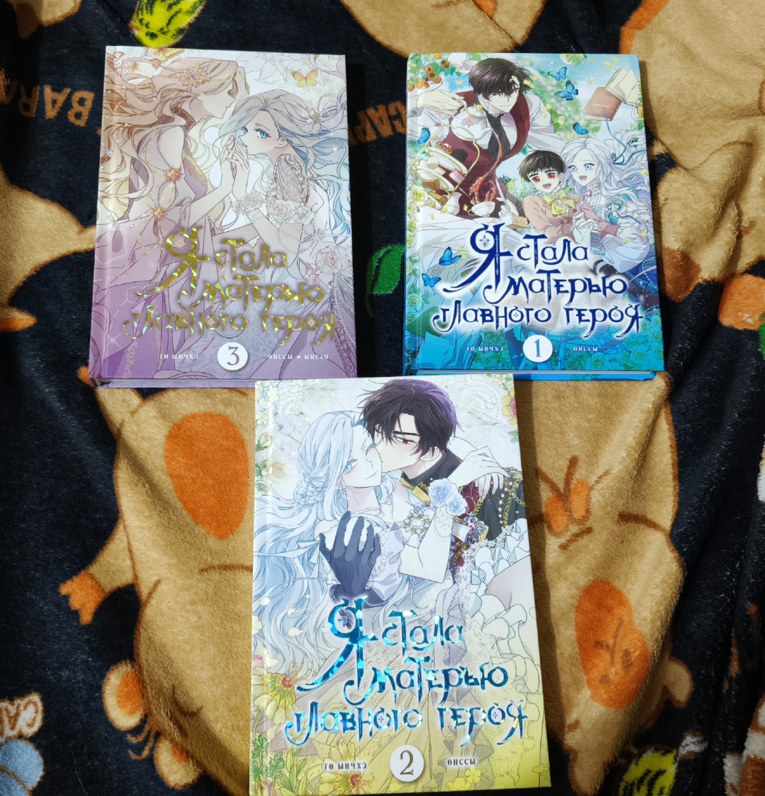
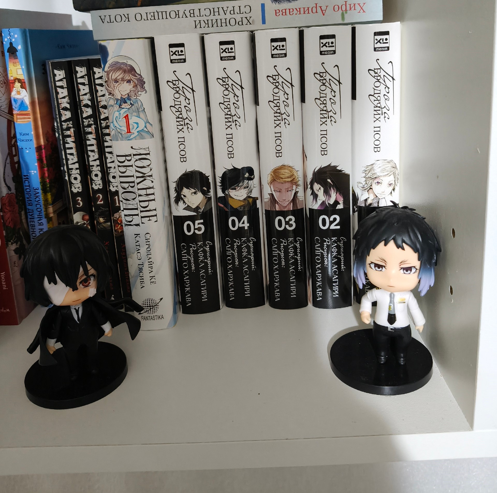
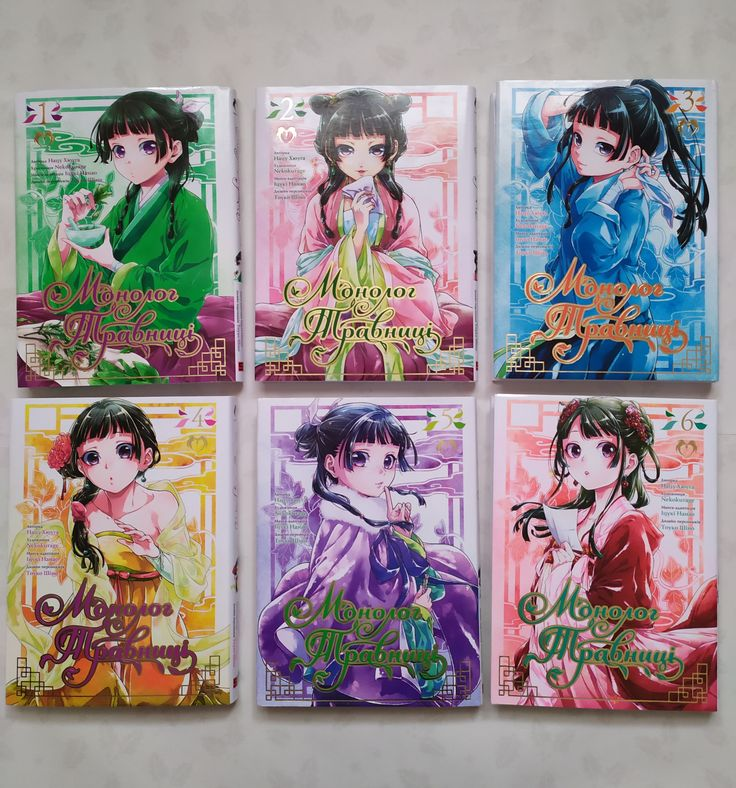
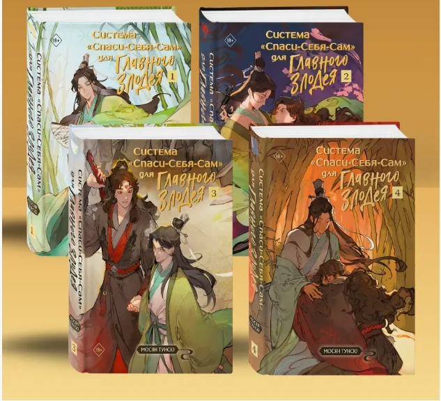

Любимые книги
Кликни по маленькому фото внизу — оно откроется сверху вместе с описанием.

Магистр дьявольского культа
«Магистр дьявольского культа» — это роман китайской писательницы Мосян Тунсю. Иногда встречается перевод «Основатель тёмного пути».
Действие разворачивается в фэнтезийном мире, напоминающем средневековый Китай. Главный герой, Вэй Усянь (известный также как Старейшина Илин), был могущественным заклинателем, основавшим «Тёмный путь». После гибели во время осады горы Луаньцзан его дух через жертвенный ритуал возвращается в мир живых — но уже в теле забитого деревенского парня Мо Сюаньюя.
Вместо покоя Вэй Усянь сталкивается с новыми вызовами: ему приходится разбираться в запутанных событиях прошлого, разгадывать тайны и восстанавливать своё доброе имя. В этом ему неожиданно помогает Лань Ванцзи — заклинатель из клана Гусу Лань, который в молодости был его другом, а потом узнал в новом теле Вэй Усяня. Вместе они расследуют инциденты, сталкиваются с интригами и постепенно преодолевают старые обиды. В сюжете переплетаются приключения, мистика, детективная линия и романтическая история.

В конце они оба умрут
«В конце они оба умрут» Адам Сильвера. Конечно название книги уже говорит, что главные герои умрут. Купив ее, я от слова совсем не знала, что конкретно там будет, даже аннотацию не читала.
Так вот начав ее, я сразу же представила, чтобы бы было бы будь Отдел смерти в нашем мире. Ничего разумного не представилось, не знаю почему. Мне понравилась, что в книги идет речь прям от самого персонажа. Скорее всего поэтому так получилось проникнуться в их истории и жизнь.
Читая эту книгу и зная, что Матео и Руфус умрут, я до последнего надеялась, что все же они останутся живы. И мне кажется это судьба, что таких можно сказать два разных человека, встретились в свой последний день. Это невероятно как они быстро с близились, а главное доверились друг другу.
Я понимаю Матео, тяжело выйти из зоны комфортно, когда в принципе и так все устраивает. Я сама такая, предпочту сидеть дома, не желе с кем-то гулять, да и друзей особо нет. Поэтому даже захотелось встретить человека похоже на того, которого встретил Матео. Руфус реально очень хороший человек и читая как он заботиться и переживает за человека, которого знает почти ничего было очень приятно.
Дойдя до момента где Пек говорит, что хочет пристрелить Руфа. Так испугалась, что да нет, да может он вот так умереть. Это не честно. И как здорово было, что этого не произошло.
Матео и Руфус прожив почти весь день вместе, очень сильно сблизились.
Момент когда лежа оба на кровати и спав, Матео проснулся, он не стал смотреть на часы. А вот представьте если бы он все таки узнал время, и узнав что день еще не прошёл. Он бы мне кажется не пошел бы на эту чёртову кухню, и не включил бы плиту. А остался бы вместе с Руфусум. Но нет, он решил заварить чай, поставив чайник на сломанную плиту. Ужасная смерть. Но больше всего мне было жаль Руфуса, который проснувшись в дыму, не увидел рядом с собой Матео. Он так не хотел видеть смерть своего Последнего друга, но жизнь, а точнее сказать смерть посчитала иначе и это еще больше убивает.
Большее спасибо автору этой книги, за такую жизненную, интересную, грустную историю. Прочитав ее можнт преосмыслить некоторые моменты свой собственной жизни. Подумать о том, а что бы ты сам сделал, если бы тебе сказали, что ты умрешь сегодня в течение 24ых часов?

Всё ради игры
«Всё ради игры» — это трилогия американской писательницы Норы Сакавич. В России книги выходили в издательстве Popcorn Books.
Действие разворачивается вокруг вымышленной спортивной игры экси (похожей на лакросс или хоккей на траве). Главный герой, Нил Джостен, вынужден скрываться от своего тёмного прошлого: он бежит от мафии, а его отец сидит в тюрьме. По воле судьбы Нил попадает в команду «Лисов», которая находится на дне турнирной таблицы. Став частью коллектива, он вынужден сражаться не только с соперниками, но и с тайнами новых товарищей. У каждого игрока в команде есть свои тяжёлые секреты.

Благословение небожителей
«Благословение небожителей» — это китайская новелла в жанре сянься (фэнтези на основе китайской мифологии и культуры), написанная писательницей Мосян Тунсю. На русском языке произведение издано в шести томах. Главный герой — Се Лянь, наследный принц государства Сяньлэ. В юности он вознёсся на Небеса, но был изгнан обратно на Землю. Спустя восемьсот лет скитаний Се Лянь в третий раз возносится на Небеса и получает задание расследовать исчезновения невест у подножия горы Юйцзюньшань. Во время расследования он встречает загадочного юношу по имени Саньлан, который оказывается могущественным демоном Хуа Чэном. Несмотря на их разное происхождение, между ними возникает особая связь. Вместе они раскрывают заговор, связанный с древним государством Баньюэ, и сталкиваются с древним злом, угрожавшим миру смертных и небесному царству. История затрагивает темы любви, преданности, дружбы, ненависти, мести, судьбы, выбора и долга.

Синтонимы
«Синтонимы» — это фэнтези-цикл российской писательницы Медины Мирай. В центре сюжета — мир, где у большинства людей есть уникальный стихийный дар (огонь, вода, земля, воздух), а те, кто лишён способностей, называются синтонимами. Сами по себе они кажутся бесполезными, но в чужих руках могут стать опасным оружием.
Главные герои — подростки Ангела Эрар и его друг Рейден. Они учатся в школе элементов имени святой Мелани и готовятся к итоговому экзамену, где должны узнать свою доминирующую стихию. Накануне испытания в школе появляется потенциальный синтоним, и им оказывается Ангела. Ему нужно срочно придумать, как сохранить свою тайну и сдать экзамен, но правда всплывает наружу.
После этого на синтонимов начинается охота. Главный антагонист — Трой Маклин, глава компании «З», который сам является синтонимом и планирует возобновить опасные эксперименты. Ангела и его друзья вынуждены вступить в борьбу, чтобы остановить злодеев.

Поднятие уровня в одиночку
«Поднятие уровня в одиночку» (Solo Leveling) — это популярная южнокорейская история, которая существует в нескольких форматах: как веб-новелла (первоисточник), манхва (графический роман) и ранобэ.
Автор — Чхугон. В центре сюжета — Сон Чину, охотник самого низкого E-ранга, которого коллеги прозвали «слабейшим оружием человечества». Он вступает в Лигу охотников не по призванию, а из-за нужды — чтобы оплачивать медицинские счета больной матери.
Однажды его отряд попадает в двойное подземелье с загадочной статуей. В смертельной ловушке Сон Чину получает уникальную способность — самостоятельно повышать уровень силы, как в RPG. С этого момента начинается его путь от самого слабого охотника до могущественного Теневого Монарха.

Я стала матерью главного героя
«Я стала матерью главного героя» — это манхва (корейский комикс), а не книга в традиционном печатном формате. Она вышла в серии «Вебтун» от издательства АСТ.
Главная героиня, Аиша, погибает по дороге на фан-встречу с автором своего любимого романа «Персона». Открыв глаза, она обнаруживает, что переродилась в мире этой книги — но не как главная героиня, а как второстепенный персонаж: дочь барона, чьё имя даже не упоминалось.
Аиша в восторге: она сможет наблюдать за детством своего любимого героя, Авеля Лувмонта, которому на тот момент всего семь лет. Однако приёмный отец мальчика, герцог Хадес Лувмонт, ошибочно принимает внимание Аиши на свой счёт и даже делает ей предложение.

Проза бродячих псов
«Проза бродячих псов» (Bungou Stray Dogs). Кафка Асагири (сценарий) и Санго Харукава (иллюстрации).
Сюжет начинается с сироты Ацуси Накадзима. Его выгоняют из приюта, и он оказывается в Иокогаме без денег и крыши над головой. В отчаянии парень хочет ограбить первого встречного, но в итоге спасает тонущего человека. Им оказывается Осаму Дадзай — эксцентричный сотрудник «Вооружённого детективного агентства». Вместе с коллегами Дадзай ищет загадочного тигра-людоеда, а Ацуси, который тоже пострадал от этого зверя, соглашается помочь. Постепенно герой знакомится и с другими членами агентства, у каждого из которых есть свои необычные способности. В мире манги литературные классики (писатели, поэты) тоже обладают сверхсилами, и это становится важной частью сюжета.

Монолог фармацевт
«Монолог фармацевта» (яп. 薬屋のひとりごと, Kusuriya no Hitorigoto) — это японское ранобэ авторства Хюганацу с иллюстрациями Токо Сино. История выросла из веб-романа, который в 2014 году начало издавать издательство Shufunotomo, а позже получила адаптации в виде манги и аниме.
Действие происходит в вымышленной стране Ли, напоминающей средневековый Китай. Главная героиня — 17-летняя Маомао, приёмная дочь аптекаря, которая отлично разбирается в лекарствах, болезнях и ядах. Её похищают и продают служанкой в императорский дворец. Поначалу девушка старается оставаться незаметной, скрывая свои знания. Но когда во дворце начинают происходить странные болезни и смерти детей наложниц, Маомао замечает то, что упускают другие. Попытка разобраться в причинах выводит её из тени и приводит к службе при влиятельной наложнице высшего ранга.
С этого момента сюжет разворачивается как детектив на фоне придворной драмы: Маомао расследует отравления, подозрительные происшествия, сталкивается с соперничеством и политическими интригами. Её помощником часто выступает Дзинси — главный евнух внешнего дворца, который и поручает ей разгадывать загадки, связанные с обитателями внутреннего дворца.

Система „Спаси-Себя-Сам“ для Главного Злодея
«Система „Спаси-Себя-Сам“ для Главного Злодея» — это дебютная новелла китайской писательницы Мосян Тунсю, автора популярных произведений «Благословение небожителей» и «Основатель тёмного пути». Изначально она публиковалась в интернете с 2014 года, а позже вышла в печатном формате.
Сюжет строится вокруг читателя по имени Шэнь Юань, который в ярости от бездарности новеллы «Путь гордого бессмертного демона» умирает и перерождается в мире этой самой истории — но не в роли героя, а в теле главного злодея, Шэнь Цинцю.
По сюжету оригинальной новеллы Шэнь Цинцю — жестокий наставник юноши Ло Бинхэ, который много лет издевался над учеником. В результате Ло Бинхэ вырастает могущественным, но ожесточённым полудемоном, который жестоко расправляется со своим учителем. По канону Шэнь Цинцю ждёт страшная казнь от рук Ло Бинхэ.
Чтобы избежать этой участи, Шэнь Юань в теле Шэнь Цинцю решает переписать сюжет. Но его планы осложняет Система — псевдо-игровой интерфейс, привязанный к оригинальной новелле. Она выдаёт задания по исправлению «сюжетных дыр», начисляет за их выполнение баллы, а за нарушения (например, за действия, нехарактерные для персонажа) — снимает очки. Потеря всех баллов означает смерть.
Таким образом, Шэнь Юань вынужден балансировать между желанием изменить сюжет и жёсткими рамками, которые устанавливает Система.